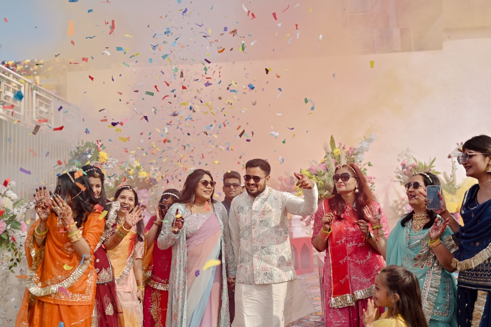
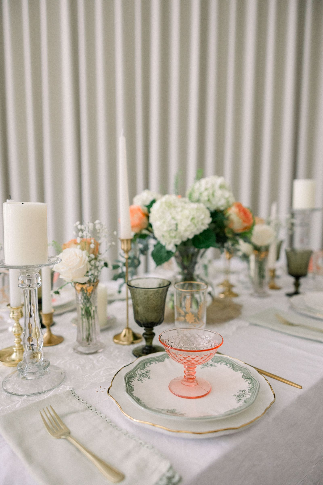

HELP CENTER & FAQS
Frequently Asked Questions
Everything you need to know about planning timelines, packages, budget transparency, Court of Honor choreography, and cultural traditions.
KNOWLEDGE BASE
Find clear answers to your planning questions
Search by keyword or filter by category to explore guidance from our certified planning directors.
Getting Started & Timing
4 QuestionsWhen should our family begin planning a Quinceañera or Sweet Sixteen?
We recommend beginning your planning journey 10 to 14 months before your celebration date. Premier reception ballrooms, cathedral churches, and top-tier cinematic photographers book out a full year in advance, particularly for peak spring and autumn Saturdays. However, if your timeline is shorter (4 to 6 months), our team specializes in accelerated timelines and can rapidly secure verified venues and vendor partners.
What initial information should we prepare before our first consultation?
To make the most of your complimentary 30-minute consultation, it is helpful to have: an approximate date or season, an estimated guest count range (e.g., 150–200 guests), a general overall budget range, and any sacred family traditions you wish to preserve (such as a Catholic Mass, Changing of the Shoes, or Court of Honor waltz). No contracts or final decisions are needed—we help you shape the rest.
Can our theme, color palette, or guest count evolve after booking?
Absolutely. We encourage families to let the vision evolve naturally. Early decisions focus on locking your date and venue. Deep aesthetic work—such as finalizing fabric swatches, floral centerpiece mockups, and invitation design—takes place between 6 and 8 months out. Final guest counts are confirmed 21 to 30 days before event day.
How do you help us select the ideal ballroom or celebration venue?
We curate a customized shortlist of vetted ballrooms, historical estates, and modern glasshouses based on your guest capacity, acoustic needs, and curfew requirements. Your lead planner attends venue tours with you, reviews rental contracts for hidden fees (such as kitchen buyouts, security mandates, and service charges), and negotiates date-hold terms on your behalf.
Services & Planning Scope
4 QuestionsWhat is the difference between Day-Of Coordination and Partial Planning?
Day-Of Coordination begins 8 weeks before your celebration; our team steps in to audit existing vendor contracts, construct the master minute-by-minute timeline, direct Court rehearsals, and manage event-day flow. Partial Planning is an active 6-month partnership designed for families who booked their venue but want professional direction on theme design, remaining vendor vetting, and budget tracking.
Do we have to use your vendor partners, or can we bring our own?
You have complete freedom of choice. We maintain a curated network of elite bilingual MCs, florists, photographers, and caterers who meet our standards for reliability and insurance compliance. If you already have family friends or preferred vendors, we gladly collaborate with them and verify their day-of logistics, power requirements, and arrival timelines.
Can we book Day-Of Coordination now and upgrade later if our needs grow?
Yes! Many families secure our Day-Of Coordination package early to lock their calendar date, and later decide they would love our creative direction for ballroom drapery, floral scenography, or court coaching. 100% of your initial deposit transfers directly toward Partial or Full-Service planning at any time.
What is included in your signature Full-Service Production package?
Full-Service Production is our comprehensive, white-glove concierge experience covering 10 to 14 months. It includes full budget modeling, venue scouting, custom 3D spatial renderings, unlimited planning sessions, up to 4 court rehearsals with professional dance coaching, church Mass direction, rehearsal dinner supervision, and 14 hours of on-site coordination with a 4-person production team.
Budget, Retainers & Payments
4 QuestionsHow are your planning quotes prepared and do you have hidden fees?
We believe in 100% price transparency. Our quotes are flat, written proposals based on your guest count, event location, and chosen level of service. There are never hidden service charges, travel surcharges within our service zone, or administrative fees. Everything agreed upon is itemized line-by-line before contract signing.
What is your deposit and installment payment schedule?
We offer a predictable, zero-interest 4-stage payment plan: a 25% date-lock retainer upon contract signing, 25% at the mid-planning checkpoint, 25% at 60 days before the celebration, and the final 25% due 7 days prior to event day. Payments are managed digitally with instant receipts in your personal client dashboard.
Do you take vendor commissions or mark up third-party services?
Never. We operate on a strict fiduciary model. Any trade discounts, bulk flower pricing, or negotiated ballroom rates pass directly to your family. You pay vendor partners directly according to their contracts, ensuring complete financial integrity and zero markups.
What is your policy if our celebration needs to be rescheduled?
Family milestones are sacred, and unforeseen life events happen. If illness, venue emergency, or personal circumstances require moving your celebration date, 100% of your paid retainer transfers to any open date within 12 months with zero rescheduling penalties or transfer fees.
Court of Honor & Sacred Traditions
4 QuestionsHow do you manage Court of Honor (Damas & Chambelanes) rehearsals?
Managing 10 to 20 teenagers can feel overwhelming for parents. Our certified choreographers coordinate structured rehearsals, teach the classic waltz (Vals), choreograph high-energy surprise dances (Baile Sorpresa), and coach formal bows and presentation walks. We distribute rehearsal schedules directly to the youth and parents so rehearsals are efficient and fun.
Do you coordinate the religious Catholic Thanksgiving Mass or Church blessing?
Yes. We coordinate directly with the church office or priest, review altar protocols, coordinate processional order with padrinos and the court, place floral altar tributes, and ensure music musicians are cued at the exact right moment before transitioning smoothly to the ballroom.
How are the traditional ceremonial moments staged and paced during the reception?
We stage the Changing of the Shoes (El Cambio de Zapatos), presentation of the Last Doll (La Última Muñeca), Tiara Coronation, and Father-Daughter Waltz at peak emotional moments in the evening. Our team prepares the ceremonial items in advance, tests microphones, cues the videographer, and ensures the guest of honor feels poised and radiant.
Can we blend modern Sweet 16 elements with traditional Quinceañera rituals?
Yes! We specialize in modern hybrid celebrations that honor Mexican, Colombian, Puerto Rican, Cuban, and Latin American heritage while embracing metropolitan Sweet 16 aesthetics—such as pairing a traditional Catholic blessing with a candlelighting ceremony, custom mocktail bar, and LED robot dance hour.
Event Day Logistics & Emergency Protocols
3 QuestionsHow many planners are on site during celebration day, and for how many hours?
Our minimum staffing is a 2-person team (Lead Planner + Operations Assistant) for 10 continuous hours on Day-Of packages, a 3-person team for 12 hours on Partial Planning, and a 4-person team (Senior Director + 3 Coordinators) for 14 hours on Full-Service Production. We remain on site from morning load-in until final breakdown.
What emergency supplies and equipment does your team bring?
Every team brings our comprehensive Emergency Production Kit: heavy-duty garment steamers, emergency bridal/quince sewing kits, specialized stain removers, safety pins, hem tape, hair touch-up pins, first aid kits, backup phone chargers, audio adapter cables, and floral hydration sprays.
How do you handle vendor arrival delays, weather shifts, or schedule disruptions?
Our lead planner is the designated sole point of contact for all vendors on celebration day. If a florist is delayed in traffic or outdoor weather forces a patio cocktail hour indoors, we execute pre-planned contingency protocols immediately without troubling the celebrant or parents.
No matching questions found
Try searching for another keyword such as "budget", "waltz", "church", "shoes", or "deposit".
Ask our team directlyREADY TO BEGIN
Let's start shaping her unforgettable milestone
Schedule your complimentary discovery conversation today and receive a personalized planning timeline and budget projection.
